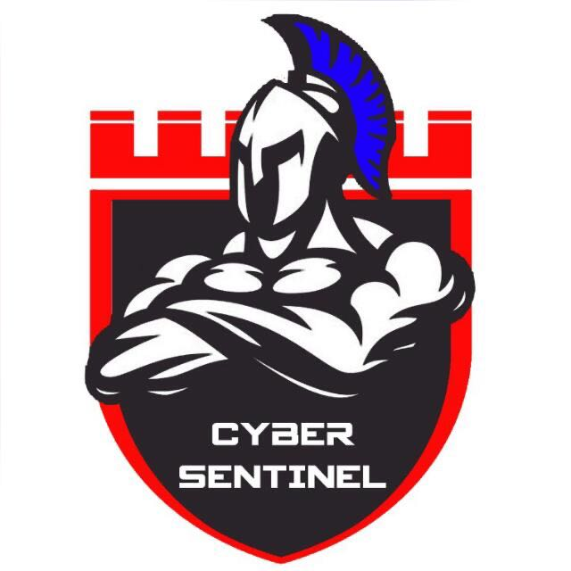

About Cyber Sentinels:
Formed out of a sheer passion for cybersecurity, we at CS believe in CAN.
Flourishing our knowledge in CYBERSECURITY, raising AWARENESS about cybersecurity and the latest trends in it along with NETWORKING with those already in the field.
Conducting cool hack workshops, CTF challenges and cybertalks is what our forte is! Our team of young minds prevails to foster cyber awareness among all those, whom we can reach and enlighten!
We took the gathered inspiration and our ingrained passion to make a fusion...Cyber Sentinels
We are here, for the love of cybersecurity!!
Happy hacking!!
ONE TEAM. ONE BELIEF. ONE SENTINEL.
Click on this link to register!!!
